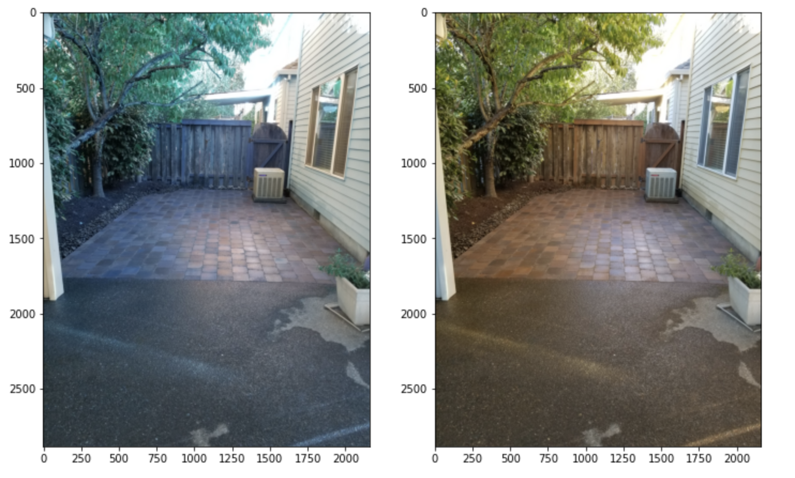
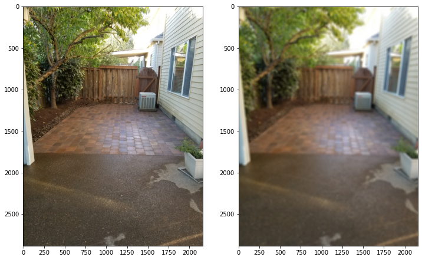

Summary
- use
cv2.imread()to read an image file andcv2.cvtColor()to convert the image from one color space (e.g. BGR to RGB). - select the filter (e.g. Gaussian Kernel function
cv2.GaussianBlur()or any custom filtercv2.blur()) and apply to the image for smoothing effect.
Getting Started with OpenCV
# import libraries
import cv2
import numpy as np
import matplotlib.pyplot as plt
%matplotlib inline
# mount the google drive to get my image
from google.colab import drive
drive.mount('/content/gdrive')
# Load the image and change color space
def load_img():
img = cv2.imread(F'/content/gdrive/My Drive/Colab Notebooks/ComputerVision/tiles.jpg').astype(np.float32) / 255
img = cv2.cvtColor(img, cv2.COLOR_BGR2RGB)
return img
def load_img_without_color_convert():
img = cv2.imread(F'/content/gdrive/My Drive/Colab Notebooks/ComputerVision/tiles.jpg').astype(np.float32) / 255
return img
Open CV color was formatted in blue-green-red(BGR), so the image is convered to red-green-blue(RGB) scheme to show the image in a way human perceives the color.

# Display one image
def display_img(img):
fig = plt.figure(figsize=(12,10))
ax = fig.add_subplot(111)
ax.imshow(img)
# Display two images side by side
def display_side(img1, img2):
fig = plt.figure(figsize=(12, 10))
ax=fig.add_subplot(121)
ax.imshow(img1)
ax=fig.add_subplot(122)
ax.imshow(img2)
# Call the function and load the image
img = load_img()
How to blur a image
Gaussian kernel function is used to smoothe the image. The aspect ratio of the image is H: 2880, W: 2160, and the kernel function was applied to all three color channels.
# Gaussian Kernel
blurred_backyard = cv2.GaussianBlur(img,ksize=(15,15),sigmaX=10, sigmaY=10, borderType=4)
display_side(img, blurred_backyard)
As Kernel size increases, the image blurs more. Given the large image size (2160 by 2880), a small sized kernels such as 3 x 3 and 5 x 5 did not effectively blur the image. The kernel size of 15 x 15 delivered a clear blurring effect for this image. The sigma values in the Gaussian filter implies that there are some variation around its mean value. The larger the sigma values in both x and y, the blurrier a image gets.
The left is the original image and the right is the one after smoothing.

For the border, reflective border type was chosen. This is because the image showed my backyard and it was safe to assume similar pattern continues (fence, tree, and nextdoor house) beyond what’s showing on the image.
# other kernel functions we can use
dst_blur = cv2.blur(img, ksize=(15,15),borderType=4) # same as customized kernel (averaging)
dst_median = cv2.medianBlur(img,5)